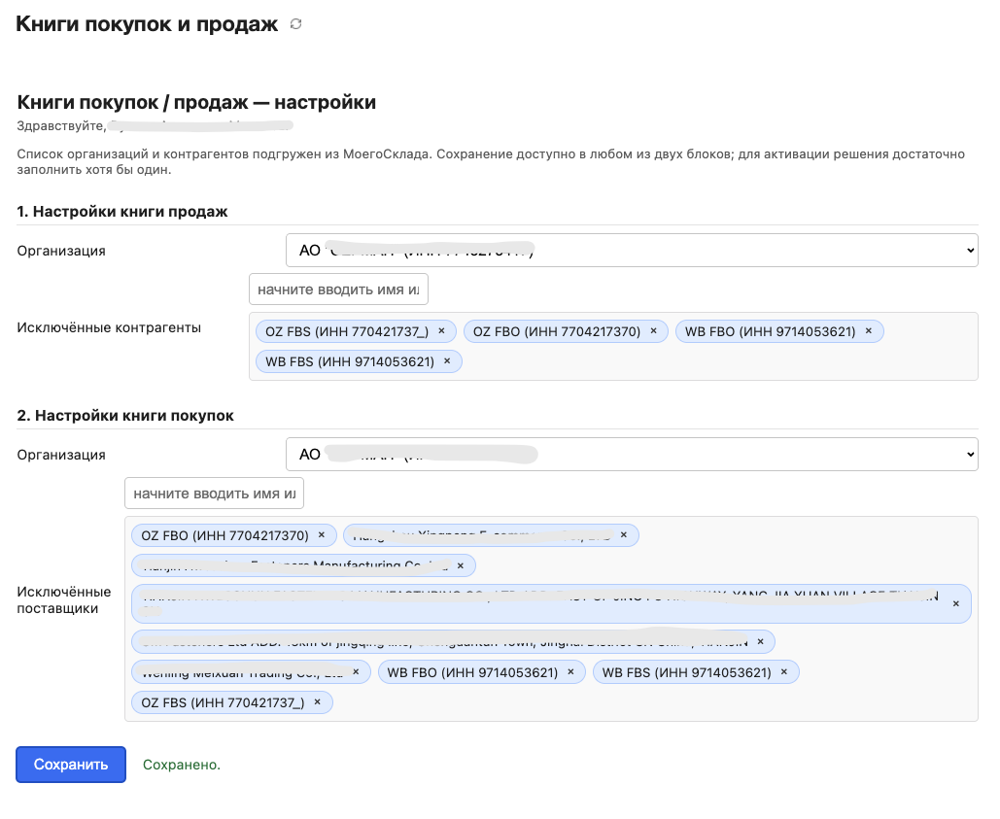
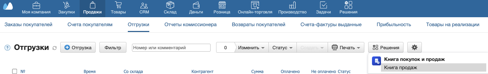
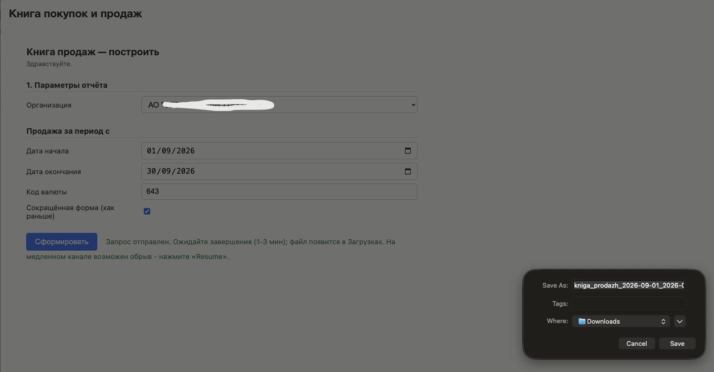
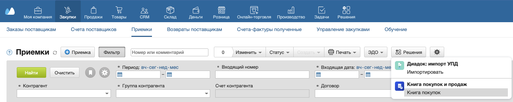
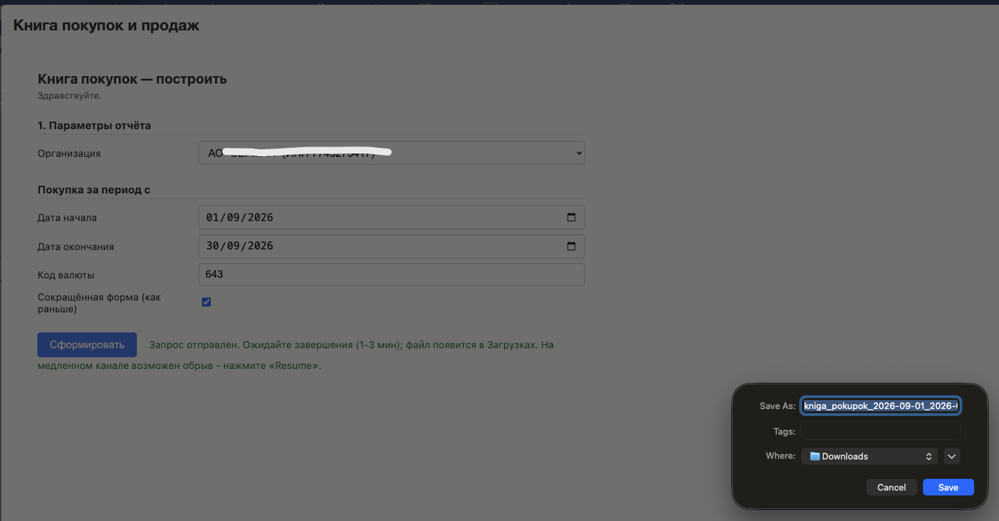
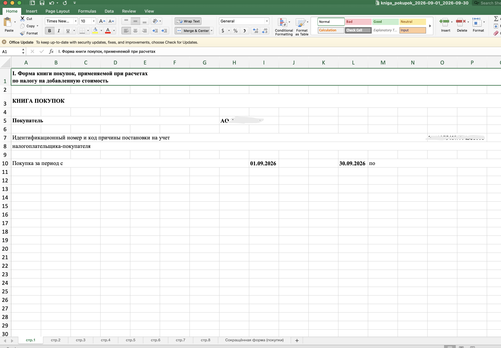

Книга покупок и продаж
Решение формирует книги покупок и продаж в формате Excel (.xlsx) по данным МойСклад — по отгрузкам, розничным продажам, приёмкам и заказам поставщикам. Работает без внешних сервисов: всё, что нужно, — аккаунт МойСклад.
1 Установите решение
Откройте раздел «Решения» в МойСклад, найдите «Книга покупок и продаж» и нажмите «Установить». Подтвердите доступ к аккаунту.
2 Настройте книги
Откройте приложение (Решения → «Книга покупок и продаж»). Выберите организацию для книги продаж и организацию для книги покупок. При необходимости исключите отдельных контрагентов из книги продаж и поставщиков из книги покупок — начните вводить имя или ИНН и выберите из списка. Нажмите «Сохранить». Достаточно заполнить хотя бы один блок.

3 Постройте книгу продаж
Перейдите в раздел «Продажи → Отгрузки» (или «Розничные продажи»), нажмите «Решения» и выберите «Книга продаж». В открывшемся окне выберите организацию, даты начала и окончания периода, при необходимости измените код валюты (по умолчанию 643 — рубли) и снимите галочку «Сокращённая форма», если нужна полная форма книги. Нажмите «Сформировать».


4 Постройте книгу покупок
Перейдите в раздел «Закупки → Приёмки» (или «Заказы поставщикам»), нажмите «Решения» и выберите «Книга покупок». Параметры те же: организация, период, валюта, форма. Нажмите «Сформировать».


5 Готово
Файл книги в формате .xlsx появится в «Загрузках» браузера. Формирование занимает одну–три минуты: решение собирает данные за весь выбранный период. Если соединение оборвалось, нажмите «Сформировать» ещё раз.
